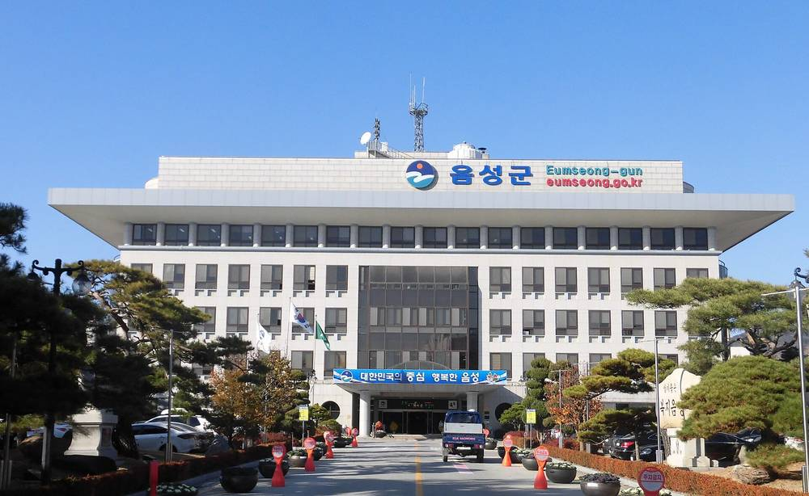

충북개발공사, 음성군 공영주차장에 첫 공공주도형 태양광…발전 순이익 50% 20년간 군에 돌려준다

한전KDN과 함께 세우는 특수목적법인 '충북솔라링크'가 캐노피형 설비 운영, 군은 부지·행정 지원…'충북형 표준모델'로 도내 다른 시·군에 넓힐 계획
충북개발공사가 음성군 공영주차장 위에 지붕형(캐노피형) 태양광 발전설비를 세우고, 발전사업에서 남는 순이익의 50%를 20년 동안 음성군에 돌려주기로 했다. 공사는 10일 음성군청에서 음성군·한전KDN과 공공주도형 태양광 발전사업 업무협약을 맺고 음성을 '공공주도형 태양광 1호 사업' 지역으로 확정했다. 지난해 12월 한전KDN과 공동사업 협약을 맺은 지 11개월 만이다. 사업은 공사와 한전KDN이 함께 출자해 세우는 특수목적법인 ㈜충북솔라링크가 맡고, 음성군은 부지 제공과 행정 지원을 담당한다. 주차장 지붕을 쓰는 방식이라 따로 땅을 마련하거나 숲을 깎을 필요가 없고, 군은 신재생에너지법에 따른 공영주차장 재생에너지 설비 설치 의무를 설치비 없이 지키면서 세외수입도 얻게 된다. 공사는 음성 사례를 '충북형 표준모델'로 삼아 도내 다른 시·군으로 넓히겠다고 밝혔지만, 설비 용량과 사업비, 예상 수익은 이날 공개하지 않았다.
시민에너지 관점
공영주차장 태양광 의무화는 지자체에 짐이 아니라 기회라는 것을 음성 사례가 보여 준다. 다만 순이익 50%가 군 금고로만 들어가면 주민은 자기 동네 주차장 지붕이 돈을 번다는 사실을 체감하기 어렵다. 전남 신안군이 주민 협동조합 지분을 통해 햇빛·바람 연금을 직접 나눠 주면서 재생에너지에 대한 마을의 태도가 바뀐 것처럼, 수익의 일부라도 주민 출자나 지역 배당으로 이어지게 설계해야 한다. 충북개발공사는 '충북형 표준모델'을 넓히기 전에 용량·사업비·예상 수익을 공개하고, 다음 사업부터는 주민이 직접 출자할 수 있는 몫을 열어 두길 바란다.
출처: 충북뉴스 2026-11-10 오정열 원문 보기
창간 전 시험 발행 기사입니다.
忠北開発公社、陰城郡の公営駐車場に初の公共主導型太陽光…発電純利益の50％を20年間郡に還元
韓電KDNと共同で設立する特別目的法人「忠北ソーラーリンク」がカーポート型設備を運営、郡は用地と行政を支援…「忠北型標準モデル」として道内の他市郡に拡大へ
忠清北道の地方公企業である忠北開発公社は、陰城郡の公営駐車場の上にカーポート型の太陽光発電設備を設け、発電事業の純利益の50％を20年間陰城郡に還元することにした。公社は10日、陰城郡庁で陰城郡、韓電KDNと公共主導型太陽光発電事業の業務協約を結び、陰城を「公共主導型太陽光1号事業」の地域に確定した。昨年12月に韓電KDNと共同事業協約を結んでから11カ月ぶりとなる。事業は公社と韓電KDNが共同出資して設立する特別目的法人「忠北ソーラーリンク」が担い、陰城郡は用地提供と行政支援を受け持つ。駐車場の屋根を使うため新たな土地の確保や森林伐採が要らず、郡は新再生エネルギー法に基づく公営駐車場への再エネ設備設置義務を設置費なしで果たしながら税外収入も得られる。公社は陰城の事例を「忠北型標準モデル」として道内の他の市郡に広げるとしたが、設備容量や事業費、見込み収益はこの日公表しなかった。
市民エネルギーの視点
公営駐車場への太陽光設置義務は自治体にとって負担ではなく機会であることを、陰城の事例は示している。ただ、純利益の50％が郡の財政に入るだけでは、住民は自分の町の駐車場の屋根が稼いでいることを実感しにくい。全羅南道新安郡が住民協同組合の持ち分を通じて「日差し・風年金」を直接分配し、再エネに対する村の姿勢が変わったように、収益の一部でも住民出資や地域配当につながる設計が必要だ。忠北開発公社は「忠北型標準モデル」を広げる前に容量・事業費・見込み収益を公開し、次の事業からは住民が直接出資できる枠を設けてほしい。
出典: 충북뉴스 2026-11-10 오정열 原文を読む
創刊前の試験発行記事です。
忠北开发公社在阴城郡公营停车场建首个公共主导型光伏…发电净利润50%在20年内返还郡政府
与韩电KDN共同设立的特殊目的法人“忠北Solar Link”运营车棚式设备，郡政府提供用地与行政支持…将作为“忠北型标准模式”推广至道内其他市郡
韩国忠清北道地方公企业忠北开发公社将在阴城郡公营停车场上方建设车棚式光伏发电设施，并在20年内把发电业务净利润的50%返还给阴城郡。公社10日在阴城郡厅与阴城郡、韩电KDN签署公共主导型光伏发电项目业务协议，确定阴城为“公共主导型光伏1号项目”所在地。这距离公社去年12月与韩电KDN签订共同事业协议已过去11个月。项目由公社与韩电KDN共同出资设立的特殊目的法人“忠北Solar Link”负责，阴城郡负责提供用地和行政支持。由于利用停车场顶棚，无需另行取得土地或砍伐森林；郡政府无需承担设施费用即可履行《新能源和可再生能源法》规定的公营停车场可再生能源设施安装义务，同时增加非税收入。公社表示将把阴城案例作为“忠北型标准模式”推广到道内其他市郡，但当天未公布装机容量、项目费用和预期收益。
市民能源视角
阴城的案例表明，公营停车场光伏安装义务对地方政府而言不是负担而是机会。但如果净利润的50%只进入郡财政，居民很难感受到自家附近停车场顶棚在创造收益。正如全罗南道新安郡通过居民合作社持股直接发放“阳光·风力年金”后，村庄对可再生能源的态度随之改变，收益中至少一部分应设计为居民出资或地方分红。忠北开发公社在推广“忠北型标准模式”之前，应公开容量、项目费用和预期收益，并从下一个项目起为居民直接出资预留份额。
来源: 충북뉴스 2026-11-10 오정열 查看原文
本文为创刊前试发行文章。
Chungbuk Development Corporation to Build First Public-Led Solar Over Eumseong Car Parks, Returning Half of Net Profit to County for 20 Years
Special purpose company 'Chungbuk Solar Link', set up with KEPCO KDN, will run canopy panels while the county provides sites and administrative support; the model is to be extended to other cities and counties in the province
Chungbuk Development Corporation, a public enterprise of South Korea's North Chungcheong Province, will install canopy-style solar panels over public car parks in Eumseong County and return 50% of the project's net profit to the county for 20 years. On the 10th the corporation signed an agreement with Eumseong County and KEPCO KDN at the county office, confirming Eumseong as the site of its first public-led solar project, 11 months after it signed a joint venture agreement with KEPCO KDN last December. The project will be run by Chungbuk Solar Link, a special purpose company jointly funded by the corporation and KEPCO KDN, while the county will provide the sites and administrative support. Because the panels sit over parking spaces, no new land or tree felling is needed, and the county can meet its legal duty to install renewable energy at public car parks without paying for the equipment while gaining non-tax revenue. The corporation said it would roll out the Eumseong case as a 'Chungbuk standard model' to other cities and counties, but it did not disclose capacity, project cost or expected revenue.
Citizen Energy View
Eumseong shows that the duty to put solar on public car parks can be an opportunity rather than a burden for local governments. But if the 50% share simply flows into the county budget, residents will hardly feel that the roofs over their local car parks are earning money. Just as Sinan County in South Jeolla changed village attitudes by paying 'sunlight and wind pensions' directly through residents' cooperative stakes, at least part of the revenue should be designed to flow into resident investment or local dividends. Before spreading its 'standard model', the corporation should disclose capacity, cost and expected revenue, and leave room in its next projects for residents to invest directly.
Source: 충북뉴스 2026-11-10 오정열 Read the original
This article was published during the trial period before launch.